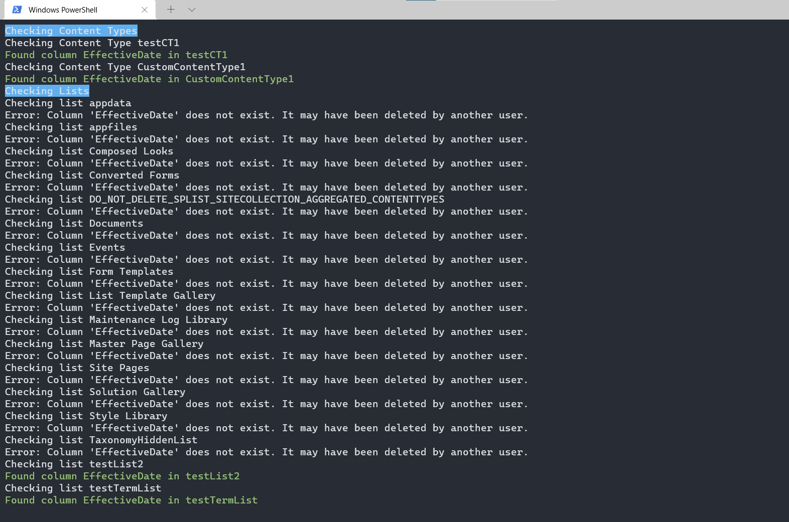
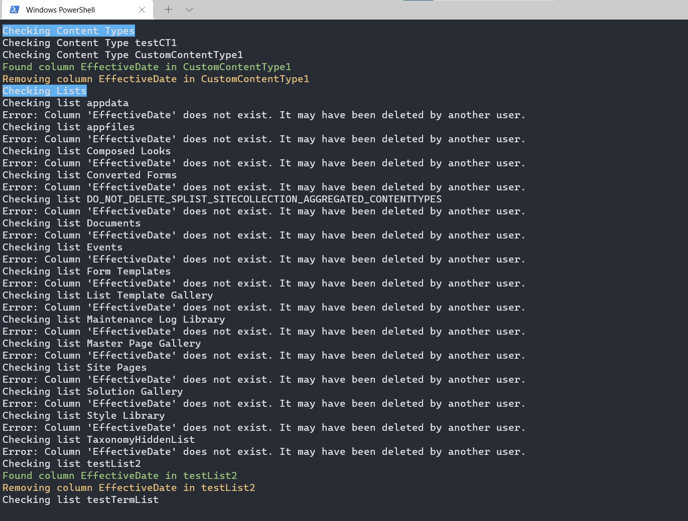

Clean Up Unwanted Site Columns from Content Types and Lists/Libraries
Summary
Sometimes when we iteratively build out our information architecture, we’re over-zealous. It seems like we need a set of Site Columns to maintain metadata on lists or libraries, but in the end, we decide we want to trim away a few of the Site Columns we’ve created. Or, maybe you’ve migrated a bunch of metadata into SharePoint with a set of documents and it turns out that metadata is no longer valid or useful.
If the Site Columns exist in only one or two libraries, it’s not a big deal to do this manually. But when you need to remove several Site Columns across a dozen or so Content Types, which are applied to a dozen or so libraries, PowerShell may make more sense.
When we want to clean up use of a Site Column – and we’re setting up our information architecture well – there are three main steps:
- Remove the Site Column from all Content Types which have it.
- Remove the orphaned Site Column from all lists/libraries which have it. When we remove a Site Column from Content Types which are enabled on lists or libraries, the orphaned Site Column remains. This makes sense, because you probably have some data in that column. To truly remove it, you need to remove the column in each list as well.
- Remove the Site Column itself. This removes it from the site entirely.
$reportOnly = $true

$reportOnly = $false

CLI version of the script works the same except the user needs to provide a list of content types that needs to be checked.
$reportOnly = $true

$reportOnly = $false

# Import modules
Import-Module PnP.PowerShell
# Base variables
$siteURL = "https://tenant.sharepoint.com/sites/sitename"
$siteColumn = "EffectiveDate"
$reportOnly = $false # If $true, just report. If $false, take action.
# Connect to the tenant
$siteConnection = Connect-PnPOnline -Url $siteUrl -Interactive -ReturnConnection
# Remove the Site Column from all Content Types which have it
Write-Host -BackgroundColor Blue "Checking Content Types"
# Get all the Content Types. Here, I have all my custom Content Types in a Group called _ClientName.
$cts = Get-PnPContentType -Connection $siteConnection | Where-Object { $_.Group -eq "_ClientName" }
foreach ($ct in $cts) {
Write-Host "Checking Content Type $($ct.Name)"
$fields = Get-PnPProperty -ClientObject $ct -property "Fields" | Where-Object { $_.InternalName -eq $siteColumn }
$field = $fields | Where-Object { $_.InternalName -eq $siteColumn }
if ($field) {
Write-Host -ForegroundColor Green "Found column $($siteColumn) in $($ct.Name)"
if (!$reportOnly) {
Write-Host -ForegroundColor Yellow "Removing column $($siteColumn) in $($ct.Name)"
Remove-PnPFieldFromContentType -Field $field -ContentType $ct -Connection $siteConnection
}
}
}
# Remove the orphaned Site Column from all lists/libraries which have it
Write-Host -BackgroundColor Blue "Checking Lists"
# Get all lists/libraries in the site, but exclude System or Hidden lists
$lists = Get-PnPList -Connection $siteConnection | Where-Object { $_.Hidden -ne $true -and $_.IsSystemList -ne $true }
foreach ($list in $lists) {
Write-Host "Checking list $($list.Title)"
$field = Get-PnPField -List $list | Where-Object { $_.InternalName -eq $siteColumn }
if ($field) {
Write-Host -ForegroundColor Green "Found column $($siteColumn) in $($list.Title)"
if (!$reportOnly) {
Write-Host -ForegroundColor Yellow "Removing column $($siteColumn) in $($list.Title)"
Remove-PnPField -Identity $field -List $list -Connection $siteConnection -Force
}
}
}
# Remove the Site Column itself
if (!$reportOnly) {
Remove-PnPField -Identity $siteColumn
}
function Invoke-SiteColumnCleanup {
[CmdletBinding(SupportsShouldProcess)]
param(
[Parameter(Mandatory, HelpMessage = "SharePoint site URL hosting the content types and lists")]
[ValidateNotNullOrEmpty()][string] $SiteUrl,
[Parameter(Mandatory, HelpMessage = "Names of content types that should be scanned for the site column")]
[ValidateNotNullOrEmpty()][string[]] $ContentTypeNames,
[Parameter(Mandatory, HelpMessage = "Display name of the site column to remove")]
[ValidateNotNullOrEmpty()][string] $SiteColumnName,
[Parameter(HelpMessage = "When set, only report usage without removing the column")]
[switch] $ReportOnly
)
begin {
Write-Verbose "Ensuring CLI session is authenticated."
$loginOutput = m365 login --ensure 2>&1
if ($LASTEXITCODE -ne 0) {
throw "Failed to ensure CLI login. CLI output: $loginOutput"
}
$script:Summary = [ordered]@{
ContentTypesChecked = 0
ContentTypesUpdated = 0
ListsChecked = 0
ListsUpdated = 0
SiteColumnRemoved = 0
Failures = 0
}
}
process {
Write-Host "Checking content types for column '$SiteColumnName'."
foreach ($ctName in $ContentTypeNames) {
$script:Summary.ContentTypesChecked++
Write-Host "Examining content type '$ctName'."
$ctOutput = m365 spo contenttype get --webUrl $SiteUrl --name $ctName --output json 2>&1
if ($LASTEXITCODE -ne 0) {
$script:Summary.Failures++
Write-Warning "Failed to retrieve content type '$ctName'. CLI output: $ctOutput"
continue
}
try {
$ct = $ctOutput | ConvertFrom-Json -ErrorAction Stop
}
catch {
$script:Summary.Failures++
Write-Warning "Unable to parse content type '$ctName'. $($_.Exception.Message)"
continue
}
$query = "[?Title=='$SiteColumnName' || InternalName=='$SiteColumnName']"
$fieldsOutput = m365 spo contenttype field list --webUrl $SiteUrl --contentTypeName $ctName --properties "Title,Id,InternalName" --query $query --output json 2>&1
if ($LASTEXITCODE -ne 0) {
$script:Summary.Failures++
Write-Warning "Failed to list fields for content type '$ctName'. CLI output: $fieldsOutput"
continue
}
try {
$ctFields = $fieldsOutput | ConvertFrom-Json -ErrorAction Stop
}
catch {
$script:Summary.Failures++
Write-Warning "Unable to parse field list for '$ctName'. $($_.Exception.Message)"
continue
}
$fieldLink = $ctFields | Select-Object -First 1
if ($fieldLink) {
Write-Host -ForegroundColor Green "Found field '$SiteColumnName' in content type '$ctName'."
if (-not $ReportOnly -and $PSCmdlet.ShouldProcess("Content type '$ctName'", "Remove field link")) {
$removeOutput = m365 spo contenttype field remove --webUrl $SiteUrl --contentTypeId $ct.Id.StringValue --id $fieldLink.Id --force 2>&1
if ($LASTEXITCODE -ne 0) {
$script:Summary.Failures++
Write-Warning "Failed to remove field '$SiteColumnName' from '$ctName'. CLI output: $removeOutput"
}
else {
$script:Summary.ContentTypesUpdated++
}
}
}
}
Write-Host "Checking lists for orphaned column '$SiteColumnName'."
$listOutput = m365 spo list list --webUrl $SiteUrl --output json 2>&1
if ($LASTEXITCODE -ne 0) {
$script:Summary.Failures++
throw "Failed to retrieve lists. CLI output: $listOutput"
}
try {
$lists = $listOutput | ConvertFrom-Json -ErrorAction Stop
}
catch {
throw "Unable to parse lists response. $($_.Exception.Message)"
}
foreach ($list in $lists) {
$script:Summary.ListsChecked++
$listTitle = $list.Title
Write-Host "Examining list '$listTitle'."
$listQuery = "[?Title=='$SiteColumnName' || InternalName=='$SiteColumnName']"
$listFieldsOutput = m365 spo field list --webUrl $SiteUrl --listTitle $listTitle --query $listQuery --output json 2>&1
if ($LASTEXITCODE -ne 0) {
$script:Summary.Failures++
Write-Warning "Failed to list fields for list '$listTitle'. CLI output: $listFieldsOutput"
continue
}
try {
$listFields = $listFieldsOutput | ConvertFrom-Json -ErrorAction Stop
}
catch {
$script:Summary.Failures++
Write-Warning "Unable to parse field list for '$listTitle'. $($_.Exception.Message)"
continue
}
$listField = $listFields | Select-Object -First 1
if (-not $listField) {
continue
}
Write-Host -ForegroundColor Green "Found field '$SiteColumnName' in list '$listTitle'."
if (-not $ReportOnly -and $PSCmdlet.ShouldProcess("List '$listTitle'", "Remove field")) {
$removeFieldOutput = m365 spo field remove --webUrl $SiteUrl --listTitle $listTitle --id $listField.Id --force 2>&1
if ($LASTEXITCODE -ne 0) {
$script:Summary.Failures++
Write-Warning "Failed to remove field from list '$listTitle'. CLI output: $removeFieldOutput"
}
else {
$script:Summary.ListsUpdated++
}
}
}
if (-not $ReportOnly -and $PSCmdlet.ShouldProcess("Site '$SiteUrl'", "Remove site column '$SiteColumnName'")) {
$siteFieldOutput = m365 spo field get --webUrl $SiteUrl --title $SiteColumnName --output json 2>&1
if ($LASTEXITCODE -eq 0) {
try {
$siteField = $siteFieldOutput | ConvertFrom-Json -ErrorAction Stop
}
catch {
$script:Summary.Failures++
throw "Unable to parse site column details for '$SiteColumnName'. $($_.Exception.Message)"
}
$removeSiteField = m365 spo field remove --webUrl $SiteUrl --id $siteField.Id --force 2>&1
if ($LASTEXITCODE -ne 0) {
$script:Summary.Failures++
Write-Warning "Failed to remove site column '$SiteColumnName'. CLI output: $removeSiteField"
}
else {
$script:Summary.SiteColumnRemoved++
}
}
else {
Write-Verbose "Site column '$SiteColumnName' was not found at the site level."
}
}
}
end {
Write-Host "`nCleanup summary:" -ForegroundColor Cyan
Write-Host " Content types checked : $($script:Summary.ContentTypesChecked)"
Write-Host " Content types updated : $($script:Summary.ContentTypesUpdated)"
Write-Host " Lists checked : $($script:Summary.ListsChecked)"
Write-Host " Lists updated : $($script:Summary.ListsUpdated)"
Write-Host " Site columns removed : $($script:Summary.SiteColumnRemoved)"
Write-Host " Failures : $($script:Summary.Failures)"
}
}
# Example usage:
# Invoke-SiteColumnCleanup -SiteUrl "https://tenant.sharepoint.com/sites/sitename" -ContentTypeNames 'testCT1','CustomContentType1' -SiteColumnName 'EffectiveDate' -ReportOnly
Invoke-SiteColumnCleanup -SiteUrl "https://tenanttocheck.sharepoint.com/sites/PnPDemo2" -ContentTypeNames 'testContentTypeA','testContentTypeB','testContentTypeC' -SiteColumnName 'testColumn1' -ReportOnly
Source Credit
Sample first appeared on Clean Up Unwanted Site Columns from Content Types and Lists/Libraries | Marc D Anderson''s Blog
Contributors
| Author(s) |
| Marc D Anderson |
| Adam Wójcik |
Disclaimer
THESE SAMPLES ARE PROVIDED AS IS WITHOUT WARRANTY OF ANY KIND, EITHER EXPRESS OR IMPLIED, INCLUDING ANY IMPLIED WARRANTIES OF FITNESS FOR A PARTICULAR PURPOSE, MERCHANTABILITY, OR NON-INFRINGEMENT.